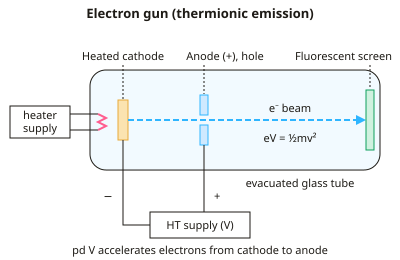

A-level Physics Year 13 · Topic 20
Turning points: electrons and quanta
Turning points, electrons and quanta, follows the experiments that showed what electrons are and how light behaves.
We will study cathode rays, the electron gun, and Thomson's and Millikan's experiments on the electron's charge and mass.
Then we trace the debate about the nature of light, from Newton and Huygens to Young, the photoelectric effect and wave particle duality.
- 6 subtopics
- 319 questions
- Free: 20.1 notes and 10 questions
In this topic
- 20.1Cathode rays, thermionic emission and the electron gunFree below · 72 questions
- 20.2Specific charge of the electron and Thomson's experimentOpen in Full Marks · 62 questions
- 20.3Millikan's oil-drop experiment and quantisation of chargeOpen in Full Marks · 60 questions
- 20.4Wave and particle theories of light: Newton, Huygens and YoungOpen in Full Marks · 69 questions
- 20.5The photoelectric effect and Einstein's photon explanationOpen in Full Marks · 17 questions
- 20.6Wave–particle duality: de Broglie wavelength and electron diffractionOpen in Full Marks · 39 questions
20.1 · Free notes
Cathode rays, thermionic emission and the electron gun

Key points
- Cathode rays are streams of electrons that leave the negative electrode (cathode) in an evacuated discharge tube. The gas is at low pressure and a pd of several kV is applied.
- Evidence for the nature of cathode rays: they travel in straight lines (a Maltese cross casts a sharp shadow). They cause fluorescence on glass or a screen. They are deflected by electric and magnetic fields in the way a negative charge would be.
- Thermionic emission is the release of conduction electrons from a heated metal surface. The electrons gain enough thermal energy to overcome the work function of the metal. The emission rate rises steeply with temperature.
- An electron gun has a heated filament/cathode, a positive anode (often with a hole or slit) and a high-voltage supply between them. The electrons are accelerated and the hole lets a narrow beam through.
- The tube must be evacuated so that electrons are not scattered, or lose energy, by collisions with gas molecules. The vacuum also stops the hot filament oxidising.
- Electrons leave the cathode with negligible kinetic energy. Accelerating through pd V gives them kinetic energy eV: eV = ½mv², so v = √(2eV/m).
- Doubling V multiplies the speed by √2, because v ∝ √V. KE is directly proportional to V.
- The electron-volt (eV) is the energy gained by an electron accelerated through 1 V: 1 eV = 1.60×10⁻¹⁹ J. Use e = 1.60×10⁻¹⁹ C and mₑ = 9.11×10⁻³¹ kg.
- Two separate controls: the heater current sets the number of electrons emitted per second (beam current). The anode pd sets their speed and energy. Examiners often ask which control does which.
- The equation eV = ½mv² only holds for non-relativistic speeds (v much less than c). At MV pds the classical formula gives v > c, so relativistic mass increase must be considered.
- Uses: cathode-ray oscilloscopes, old TV tubes, electron microscopes and the Thomson and fine-beam tube experiments.
In more detail
- Worked electron speed: accelerated through 2000 V → v = √(2eV ÷ m) = √(2 × 1.60 × 10⁻¹⁹ × 2000 ÷ 9.11 × 10⁻³¹) = 2.65 × 10⁷ m s⁻¹.
- Worked energy: 2000 V gives each electron 2000 eV = 3.2 × 10⁻¹⁶ J.
- Worked beam current: 0.50 mA means 5.0 × 10⁻⁴ ÷ 1.6 × 10⁻¹⁹ = 3.1 × 10¹⁵ electrons per second.
- Evidence summary: a sharp shadow (straight lines); deflection towards a positive plate (negative charge); deflection by a magnet (moving charges); a paddle wheel turns (they carry momentum).
Practice
Cathode rays, thermionic emission and the electron gun: 10 questions
Pick an answer to check it, or open the answer for the explanation.
1. What is thermionic emission?
- Release of electrons from a cold metal by a strong electric field
- Ionisation of gas atoms by fast-moving electrons
- Release of electrons from a metal by high-frequency light
- Release of electrons from a heated metal surface
Show answer
D: Release of electrons from a heated metal surface. Heating gives conduction electrons enough energy to overcome the work function and escape. Release by light is the photoelectric effect, not thermionic emission.
2. Why is the tube of an electron gun evacuated?
- To increase the resistance of the heater filament
- To raise the work function of the cathode
- To make the anode attract electrons more strongly
- To stop electrons colliding with and being scattered by gas molecules
Show answer
D: To stop electrons colliding with and being scattered by gas molecules. Gas molecules would scatter the electrons and take energy from them, so a narrow beam could not form. The vacuum also protects the hot filament.
3. An electron is accelerated from rest through 2.0 kV. Its speed is closest to (e = 1.60×10⁻¹⁹ C, m = 9.11×10⁻³¹ kg)
- 1.3×10⁷ m s⁻¹
- 7.0×10¹⁴ m s⁻¹
- 2.7×10⁷ m s⁻¹
- 1.9×10⁷ m s⁻¹
Show answer
C: 2.7×10⁷ m s⁻¹. v = √(2eV/m) = √(2×1.60×10⁻¹⁹×2000 / 9.11×10⁻³¹) = 2.65×10⁷ m s⁻¹ ≈ 2.7×10⁷. Omitting the 2 gives 1.9×10⁷.
4. An electron starts from rest and is accelerated through 1.5 kV. What kinetic energy does it gain?
- 1.6×10⁻¹⁹ J
- 9.4×10²¹ J
- 2.4×10⁻¹⁶ J
- 1.5×10³ J
Show answer
C: 2.4×10⁻¹⁶ J. KE = eV = 1.60×10⁻¹⁹ × 1500 = 2.4×10⁻¹⁶ J. This is 1.5 keV expressed in joules.
5. The heater current in an electron gun is increased while the anode pd stays the same. What happens?
- Fewer electrons are emitted because the filament resistance rises
- The work function of the cathode decreases
- Electrons reach the anode with greater speed
- More electrons are emitted per second; their speed at the anode is unchanged
Show answer
D: More electrons are emitted per second; their speed at the anode is unchanged. A hotter cathode emits more electrons per second, so the beam current rises. Their energy depends only on the accelerating pd (eV), which is unchanged.
6. The accelerating pd in an electron gun is raised from 400 V to 1600 V. The electron speed becomes
- four times
- twice
- unchanged
- half
Show answer
B: twice. v ∝ √V. A pd four times larger gives a speed √4 = 2 times larger, as long as the speed is much less than c.
7. A Maltese cross in the path of cathode rays casts a sharp shadow on a fluorescent screen. This shows that cathode rays
- are produced by a heated cathode
- travel in straight lines
- are negatively charged
- are deflected by magnetic fields
Show answer
B: travel in straight lines. A sharp-edged shadow means the rays travel in straight lines and are blocked by the cross. It does not show their charge.
8. Electrons move left to right across a page through a uniform magnetic field directed into the page. The force on them is
- into the page
- towards the top of the page
- towards the bottom of the page
- to the right
Show answer
C: towards the bottom of the page. Electrons moving right are equivalent to conventional current to the left. Fleming's left-hand rule with B into the page then gives a force down the page.
9. Which statement about an electron gun is correct?
- Electrons leave with large KE; the anode adds little
- The anode must be negative relative to the cathode
- KE gained depends only on cathode–anode separation
- Electrons leave the cathode with negligible KE and gain eV from the anode pd
Show answer
D: Electrons leave the cathode with negligible KE and gain eV from the anode pd. Thermionic electrons leave with almost no kinetic energy. The positive anode accelerates them, so the KE gained is eV. It depends on pd, not distance.
10. An electron is accelerated from rest through 100 V. Its speed is closest to
- 4.2×10⁶ m s⁻¹
- 3.5×10¹³ m s⁻¹
- 5.9×10⁶ m s⁻¹
- 8.4×10⁶ m s⁻¹
Show answer
C: 5.9×10⁶ m s⁻¹. v = √(2eV/m) = √(2×1.60×10⁻¹⁹×100 / 9.11×10⁻³¹) = 5.9×10⁶ m s⁻¹. Omitting the factor 2 gives 4.2×10⁶.
Keep going in Full Marks
Full Marks has 72 questions on Cathode rays, thermionic emission and the electron gun (62 more than here), set out in practice levels. You also get notes and 3D models for all 6 subtopics of Turning points: electrons and quanta, plus games, timed exams and past papers.
On your exam board
- AQATopic 12: Option: Turning points in physics
- EdexcelTopic 8: Nuclear and particle physics
- CambridgeTopic 20: Magnetic fields, Topic 22: Quantum physics
Not in the OCR A and OCR B specifications.